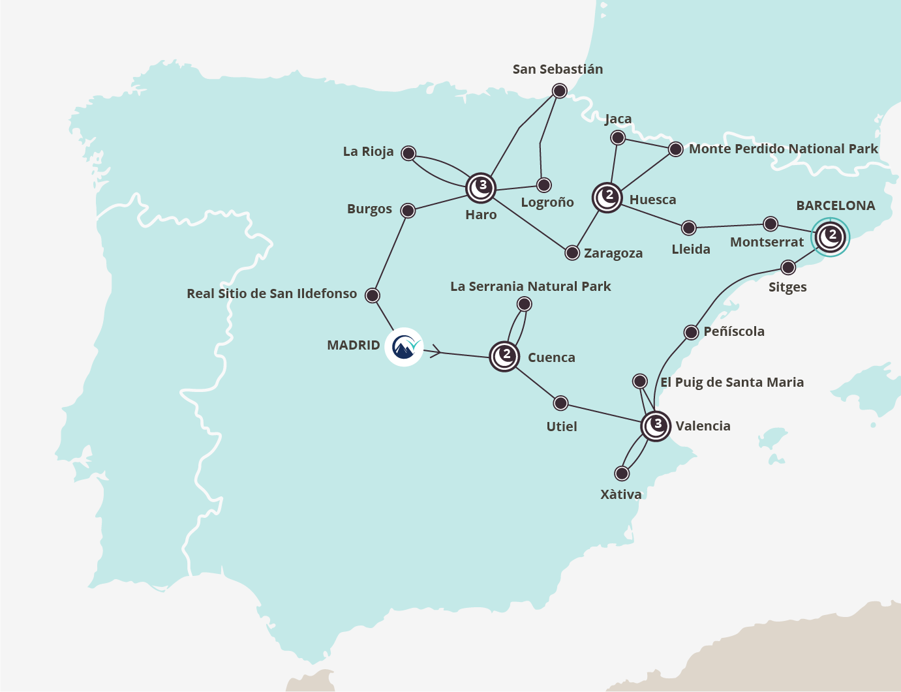

The Mountains & Mediterranean Marvels of Spain (Starts Madrid)
13 day tour
Gaze up at the Pyrenees, venture deep into Roman history, and savour the best flavours of Spain.
Highlights
Places you explore
Cuenca – Marvel at the hanging houses of this medieval city stacked on a promontory between two gorges
Peñíscola - Surrounded by lavender and the ocean, the 'City in the Sea' is a true Mediterranean marvel
Valencia - The birthplace of Paella and one of Spain's most liveable coastal cities
Montserrat Monastery - Feel the serenity of the old Benedictine priory perched on the slope of a magnificent mountain
La Rioja – The famously delicious wines here perfectly compliment the views of the Cantabrian Mountains
Monte Perdido National Park - Soaring peaks, glacial lakes, and cascading waterfalls adorn this biosphere reserve in the Pyrenees
San Sebastián– The top beach town in the Basque region is known as both a surfer's paradise and a foodie heaven
Your journey
Like the best trips, this journey never goes in a straight line.
You go up, down, left, right, over, under and all around.
You clamber over the Pyrenean mountains, into medieval castles, and through Roman remains. You weave along coastlines favoured by foodies and artists. And you glide by national parks and the rolling olive fields of La Rioja as you search for the best glass of wine you’ve ever tasted.
Take the scenic route through Spain and discover the mountains and marvels on this thirteen-day journey.
If you love this itinerary but want to start in Barcelona, have a look at this tour.
Tour Details
- This journey combines two of our tours and a free day in Barcelona. This means you may swap your bus and guide during the journey
- Pack comfortable shoes for walks up to beautiful views
- Transport in a luxury mini-coach with a local driver
- Air conditioning as standard
- The stories and services of an English-speaking guide
- 12 nights in a 3-4 star hotels with continental breakfast
- Entrance to Lapis Specularis Mine
- Entrance to Ciudad Encantada (Enchanted City)
- Entrance to Cuenca Cathedral
- Requena wine tasting
- Entrance to Xàtiva Castle
- Entrance to Aljafería Palace
- Entrance to Vivanco Museum of Wine Culture and Winery for a tasting and tour
- Royal Palace of La Granja de San Ildefonso
- Meals, unless listed above
- Attractions, unless specified above
Itinerary
Day 1
- Visit an ancient mine that provided ‘windowpanes’ for the Roman Empire
- Arrive in a town that’s carved into the cliffs, Cuenca
You say adiós to Madrid and start your journey through Castilla-La Mancha, the heart of Old Spain. This stunning region boasts gentle landscapes, lush nature, and unrivalled Manchego cheese. It’s also where Cervantes set the fictional journeys of Don Quijote in his novel that laid the foundation for modern European literature.
Your first stop is Villarejo de Salvanés. This small town boasts an unusual castle and archaeological sites that pre-date the Romans.
You travel the short distance to Osa de la Vega to explore a 2,000-year-old Lapis Specularis mine. Here, the Romans extracted transparent gypsum that was used as glass for windows. Tickets to go into the mine and discover its history are included in your tour.
Clinging to the cliffs of a limestone hill, you find Cuenca; a medieval town of cobbled paths and superior crafts. You stay in this fascinating place for two nights so you can discover its gravity-defying hanging houses and delicious cuisine.
Included Activities
- Entrance to Lapis Specularis Mine
Accommodation
Hotel Exe Cuenca or similar, Cuenca
Day 2
- Traverse the natural stone sculptures and scenic heights of Parque Natural de la Serranía de Cuenca
Today, you explore one of Castilla-La Mancha’s finest nature reserves - Parque Natural de la Serranía de Cuenca, a 73,000-hectare wildlife paradise.
Your first stop in the natural park is in the ‘Enchanted City’. This location boasts some of the strangest rock formations you’ll ever see. Wander around this magical landscape and spot mushroom-shaped stones and faces glaring at you from limestone.
You continue your journey through this landscape and stop at the stunning Mirador de Uña viewpoint.
After lunch, there are a variety of optional activities for you to choose from. Go kayaking, hiking, or visit more vibrant villages. Your guide will help you pick which one suits you best.
Back in Cuenca, you can admire more natural wonders and see dinosaurs at the Paleontological Museum if it’s open. Or, you can scroll through your images from the day over tapas and red wine before enjoying a well-earned rest.
Included Activities
- Entrance to Ciudad Encantada (the Enchanted City)
Optional Activities
- Various outdoor leisure activities in Parque Natural de la Serranía de Cuenca
- Entrance to Castilla-La Mancha Paleontological Museum
Accommodation
Hotel Exe Cuenca or similar, Cuenca
Day 3
- Savour the flavours of the wines and cuisines of the region
- Relish paella at its birthplace in Valencia
You have a leisurely start of the day with a visit to the breathtaking Cathedral of Cuenca. The ticket to this monument is included in your tour.
Then you leave this fascinating city and travel to the tiny village of Utiel for a rustic lunch. This region is famous for seafood, pumpkin dishes, and the best oranges in the country – great nourishment for all that time travelling!
Later on, you head to a winery in Requena for an included wine tasting which will invigorate your taste buds. The delicious beverage has been produced in this area since at least the 7th century BC, so you know it’s going to be delicious.
You then travel to Valencia; the home of paella, laid-back nightlife, awesome architecture, and your accommodation for the next three nights.
Included Activities
- Entrance to Cuenca Cathedral
- Requena wine tasting
Accommodation
Hotel Eurostars Rey Don Jaime or similar, Valencia
Day 4
- Learn about Monastic life at the Monastery of Santa Maria
- Roam through the unique wetlands of Albufera Natural Park
Today, your journey takes you on a half day trip that combines monastic knowledge with fantastic nature spots.
In the morning, you can choose an optional visit to the Monastery of Santa Maria in El Puig. This large building combines cloisters with defensive structures and has been used as a temple, a school, and even a prison.
It’s now time to explore the rice paddies that gave birth to the paella in the Albufera Natural Park. Your visit here also gives you a chance to spot the unique flora and fauna around a large freshwater lagoon.
You arrive back in Valencia in the afternoon. Here you can join an optional guided tour of the city combined with a tasty tapas experience.
Use the evening to either enjoy the city’s famous nightlife or prepare for the next day of your adventure.
Optional Activities
- Guided city walk and tapas experience in Valencia
- Monastery of Santa Maria in El Puig
Accommodation
Hotel Eurostars Rey Don Jaime or similar, Valencia
Day 5
- Lose yourself in the history and narrow streets of Xàtiva
Xàtiva, the town of ‘a thousand fountains’ lies upon the slopes of Monte Vernissa. A castle crowns the hills, and the location is famous for ancient paper production, educational institutions, and the notorious House of Borgia. This morning, you travel here and start off with visiting the castle and then you've got free time to delve deep into all this history. The ticket to the fortress is included in your tour.
In the afternoon, you embark on a journey to Los Charcos de Quesa. We hope you have packed your swimwear, because this scenic nature spot boasts natural pools and waterfalls for you to dip your toes in.
You return to Valencia in the early evening.
Included Activities
- Entrance to Xàtiva Castle
Accommodation
Hotel Eurostars Rey Don Jaime or similar, Valencia
Day 6
- Imagine an ancient Roman play at the theatre of Sagunto
- Admire a fusion of artistic and architectural styles in Sitges
Sagunto is your first destination this morning. You have time here to roam around a well-preserved Roman theatre, climb to the top of a 2,000-year-old castle complex, and explore the famous Jewish quarter.
You leave this historic town and make your way to the seaside town of Peñiscola. This place is known as the ‘City in the Sea’ and boasts a castle built by the Knights Templar. It’s also the delightful location where you have your lunch today.
A little further along the Mediterranean coast, your journey takes you to Sitges. A happening cultural hotspot, a menagerie of modernist architecture, and a few fascinating museums make this a great preparation for the big city.
You arrive in Barcelona in the evening.
Accommodation
Hotel Evenia Rocafort or similar, Barcelona
Day 7
- Stare in awe at the works of Antoni Gaudí, the greatest exponent of Catalan Modernism
- Let your hair down and enjoy the beach life
Today, you have a free day to explore Barcelona, the capital of Catalonia. This cosmopolitan city has it all: fabled architecture, sun-drenched beaches, and a world-class dining and drinking scene.
If you’re an art lover, marvel at the eccentric style of Gaudí’s finest masterpiece, La Sagrada Familia*.
Sun worshippers can laze around in the enchanting Park Güell before taking the plunge in the Mediterranean Sea on one of the city’s beaches.
Foodies may feast on hearty paella and tasty tapas and head to Mercat de la Boqueria food market for an unforgettable gourmet experience.
The evenings and nights hold limitless possibilities in Barcelona. But don’t get too carried away in bars and clubs because you continue your tour tomorrow.
*This UNESCO-heritage site is very popular, so please book your ticket in advance.
Optional Activities
- Ticket for a hop-on hop-off sightseeing bus
Accommodation
Hotel Evenia Rocafort or similar, Barcelona
Day 8
- Marvel at sculptures and mountainous scenery at the monastery of Montserrat
- Delve into Lleida, one of the most ancient towns in Catalonia
It’s time to contrast the bravado of Barcelona with the serrated peaks of Montserrat. This majestic mountain with strangely shaped crags is home to a Benedictine Monastery and one of Spain’s most venerated statues of the Madonna and Child. At your stop here, you can enjoy lunch, contemplate the life of monks and hermits, and explore the magnificent basilica.
You continue deep into the mountains of Catalonia and visit Lleida. This is one of the oldest towns in the region and is steeped in Roman history. It’s a little off the beaten track and you have time to discover its castle and cathedral.
As the evening settles in, you arrive in Huesca. You overnight here for two evenings and have plenty of time to amble around the medieval streets discovering the many churches and façades of this hilly town.
Optional Activities
- Entrance to Montserrat Monastery
Accommodation
Hotel Pedro I de Aragón or similar, Huesca
Day 9
- Let the perfect panoramas of the Pyrenees take your breath away
- Step back in time and discover the ancient walls of Jaca
Put on your adventure hats and get ready for nature. This morning, you travel to Torla-Ordesa, the gateway to the Monte Perdido National Park.
From here, you explore crumbling cliffs, forests of oaks and pines, and vertical views up to 1,700 metres tall. There may be a little walking involved, so make sure you’re wearing good footwear. It’s worth it to see a few of the most scenic views in all the Pyrenees.
You leave Torla behind and head through the mountains to Jaca. Here, you can explore the perfectly preserved ‘star-shaped’ fortress, find out about the regional cuisine of Aragón, and tick off more quintessential Spanish cathedrals.
You travel back to Huesca and arrive in the early evening.
Accommodation
Hotel Pedro I de Aragón or similar, Huesca
Day 10
- Survey a fusion of Islamic and Gothic style architecture at the Aljafería Palace
- Gaze at gorgeous Goya paintings in Zaragoza
Zaragoza in Aragón looks as enchanting as it sounds. You travel here in the morning and have tickets to the 11th-century Aljafería Palace included in your tour.
After you’ve admired the patterned porticos of the beautiful palace, you have free time to explore the city. Art lovers can search for Goya paintings; history geeks can seek out Roman remains; and foodies can sample chireta, a local and delicious haggis type dish.
You then travel to Tarazona. This town boasts medieval Mudéjar style architecture: a glorious fusion of the ancient Muslim and Christian aesthetic ideals. Your neck will ache from all the staring up in wonder.
You arrive in Haro in time for your first glass of local La Rioja red wine. This wine-soaked village is your overnight location for three evenings.
Included Activities
- Entrance to Aljafería Palace
Accommodation
Hotel Eurostars Los Agustinos or similar, Haro
Day 11
- Tantalise your tastebuds with the regional flavours of the Basque Country
Today, you explore the Basque country, a land of curious customs, incredible coasts, and fabulous flavours.
Your first stop is San Sebastián, a foodie heaven with the highest number of Michelin stars per capita. You have time here to grab lunch and check out the beautiful blonde beach.
You travel back inland to Pamplona. This town is famous for San Fermin, ‘the Running of the Bulls’. Fortunately, you aren’t going to have to run anywhere, instead you can stroll around the town’s splendid fortress walls and relax.
Next, you venture to Logroño, the capital of the La Rioja region. You have free time here to enjoy the charming plazas and delicious aromas of this laid-back town. And if you want to learn more about the local area and history, your guide will offer the option to visit La Rioja Museum.
In the early evening, you travel back to Haro.
Optional Activities
- Entrance to La Rioja Museum
Accommodation
Hotel Eurostars Los Agustinos or similar, Haro
Day 12
- Take in the rustic villages and rolling green hills of La Rioja region
- Sample famous La Rioja wine from the place it’s produced
Waterfalls, wine and relaxation: an unbeatable travel combination awaits you today. In the morning, you embark on a scenic ride amongst the gentle hills and vineyards of La Rioja region. We show you a few of our favourite views of the area and let you stop and gush over the beautiful waterfalls of Tobera.
You then arrive at one of our favourite wineries in the region, which also has a wine museum. Here you get to enjoy an included tour and tasting of the local produce.
In the afternoon, you arrive back in Haro with time to rest and do whatever you please.
Included Activities
- Rioja wine tasting and tour at Vivanco Museum of Wine Culture
Accommodation
Hotel Eurostars Los Agustinos or similar, Haro
Day 13
- Cherish the stunning Cathedral of Burgos
- Stroll the exquisite grounds of the Royal Palace of La Granja de San Ildefonso
You wave goodbye to La Rioja and travel to the region of Castile and León.
Your first stop is in Burgos, where you have a few hours to admire one of the most spectacular cathedrals in all of Spain and check if the local flavours can compete with your favourite dishes from La Rioja and the Basque regions.
You head further south to the Royal Palace of La Granja de San Ildefonso. Your included ticket to this stunning structure lets you wander through the rooms of Spain’s ‘mini-Versailles’ and wonder how much the gardening bill must be for its gorgeous grounds.
As the sun sets, you arrive in the country’s capital, Madrid.
Included Activities
- Royal Palace of La Granja de San Ildefonso
Accommodation
Where does this tour stay overnight?
You stay two nights in Cuenca, three nights in Valencia, two nights in Barcelona, two nights in Huesca and three nights in Haro.
For examples of the accommodation, please see the tour itinerary.
How does the accommodation work?
A good night’s sleep is often needed for a good day of travel.
So we’ve hand-picked three-star to four-star hotels in remote coastal villages, bustling towns, and mountain valleys.
Your accommodation is included in the tour price; and when you book your trip, you can choose whether you want a double room, a twin room, or a single room.
Are there any extra accommodation costs?
The price you see is for all your tour accommodation and for the tour itself. It also includes a tourist tax. This figure is based on shared accommodation. When you're booking your tour and select a single room, an additional single room supplement will be added to the price.
FAQs
Do I need a visa to take this tour?
You may need a Schengen Visa to travel throughout Europe. Check the official tourism website of the country you’re visiting for up-to-date and reliable information. Travel between countries is easy because there are no passport checks at the borders.
Are the tours suitable for people with mobility issues?
Most people can comfortably enjoy our tours, but it's worth bearing in mind that we often include optional short walks in scenic locations. Please also be aware that many of the old European towns are built on steep hills with cobbled lanes, and you may have to carry your own luggage at times.
So that we can ensure you're comfortable travelling with us, please let us know about any special requirements or needs at the time of booking. If you have any more questions, simply email tours@rabbies.com .
Do you offer hotel pickups in the departure cities?
Europe's historic city centres are full of narrow streets and winding roads. So, to speed up your departure and avoid contributing to congestion issues, we start our trip from hotels located conveniently on the edge of cities. We choose hotels with good public transport connections to the city centre, so you can enjoy your evening explorations.
To make your tour more convenient, you can add an optional pre and post-departure accommodation in the hotel we use as a pick up or a drop off point.
When should I get to the departure point?
Arrive at the hotel lobby 15 minutes before your departure time. Unfortunately, we’re unable to wait for you if you’re late due to vehicle restrictions. But depending on your situation, we may be able to help you catch up with your tour.
What are your cancellation policies?
We have a cancellation period of 42 days for our Europe tours. If you cancel your trip before this period, we give you a full refund minus a 10% admin charge. If you cancel inside this time frame, you’re liable for the cost of the tour package.
We understand how disappointing it is when you have to cancel a trip with us, so please contact our friendly team who will try their best to resell your ticket and refund you.
Click here to view full terms and conditions.
What is a guaranteed departure?
It's simple: you book, you go. This means we'll never cancel your tour because of a minimum numbers policy.
Can routes change?
Your friendly driver and guide are passionate about the places they visit and know all the local gossip. This means your tour itinerary can change a little due to festivities, attraction opening hour changes, and spontaneous photo opportunities.
Can I pre-book a specific seat?
Due to logistical reasons, we're unable to let you pre-book a seat on the bus. But our comfortable mini-coaches offer a good view.
Are there toilets on the bus?
We like to keep our coaches small, nimble, and odour free. This means we have no on-board toilet facilities, but you frequently stop in local towns and villages for comfort breaks.
Do you take children on your tours?
We're unable to permit children under 15 years old on our Europe tours due to the nature of the activities that are included.
How much time do I get off the bus?
We want you to enjoy your trip to Europe. And we believe the best way to do this is to get you off the mini-coach and out exploring. So, we give you plenty of stops to take photos, go walking, and explore ancient ruins.
What are 'included activities' and 'optional activities'?
We've arranged experiences for you on your tour. The 'included activities' are already booked and paid for as part of your trip, whereas you can purchase 'optional activities' while on your tour. You also have free time in many destinations to pick and choose which attractions you visit.
Do we need to bring our own lunch?
You don't need to pack or bring along food on the mini-coach. We stop in small European towns, villages, and rural eateries where you can choose whatever meal pleases both your taste buds and your budget.
What should I do if I have too much luggage?
It’s more enjoyable to travel with light luggage. You can take less by cleaning clothes along the way. Most hotels provide affordable laundry service.
But if you're travelling with more than 20kg, don't worry! There are left luggage facilities close to the majority of our departure points, and courier companies who could ship your excess luggage on to your chosen destination. Our team are happy to help if you need any suggestions or recommendations.
Should I tip the driver and the guide?
Let's be honest, our drivers and guides would never refuse a cheeky bonus. But it's up to you, and the amount is entirely at your discretion.
What about travel insurance?
We highly recommend you take out travel insurance, so you can enjoy a stress-free journey.
What is ABTOT?
You're protected by ABTOT when you book a tour with us. This means you can claim back anything you've paid us if we run into any issues. Read our terms and conditions for more information.
Our packages are covered by the Package Travel Regulations. For full details of your key rights please click here.
I have more questions, who can help me?
If you have any more questions, call us on +44(0)131 226 3133, email tours@rabbies.com, or check out our full FAQs.
4 reasons to choose Rabbie's

Travel the local way on small group tours of 16 people or fewer

You'll have a guaranteed experience, or your money back

Guaranteed departures: We’ll never cancel your tour because of minimum numbers

Our eco-friendly tours support local communities
Customer reviews


Looking for inspiration?
Subscribe to our emails for tips and updates about our friendly tours across the UK & Europe.